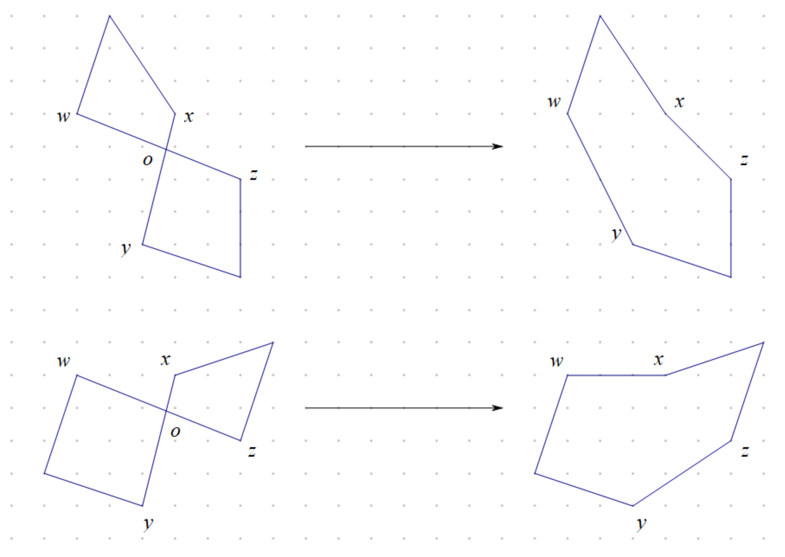

算法导论35.2 Exercises 答案
35.2-1
使用反证法证明。假设存在边\((u,v)\)，其代价为负数，并且存在节点\(w\)，满足\(c(u,v)+c(v,w)\ge c(u,w)\)。
那么两边减去\(c(u,v)\)，得到不等式\(c(v,w)\ge c(u,w)-c(u,v)\)。
由于\(c(u,v)\)是负数，因此\(-c(u,v)>c(u,v)\)，那么得到\(c(v,w)\ge c(u,w)-c(u,v)>c(u,w)+c(u,v)\)，即\(c(u,v)+c(u,w)<c(v,w)\)。这和固有的三角不等式\(c(u,v)+c(u,w)\ge c(v,w)\)矛盾。
因此\(\forall u,v\in V,c(u,v)\ge 0\)均成立。
35.2-2
接下来考虑将任意一个旅行商问题实例在多项式时间内转化成另一个代价函数满足三角不等式的旅行商问题实例。
对于图\(G=(V,E)\)和代价函数\(c\)，定义\(\displaystyle{M=\max_{(u,v)\in E}\{c(u,v)\}}\)。对于同样的图，定义代价函数\(c'(u,v)=c(u,v)+M\)。
可以知道问题实例\(\langle G,c\rangle\)中所有哈密顿回路\(C\)都和\(\langle G,c'\rangle\)的哈密顿回路一一对应。由于哈密顿回路仅包含\(|V|\)条边，因此\(c'(C)-c(C)=|V|\cdot M\)。也就是说，如果\(C\)是问题实例\(\langle G,c\rangle\)中的最优旅行路线，那么也是\(\langle G,c'\rangle\)的最优旅行路线。
接下来证明\(c'\)是满足三角不等式的。对应任意\(3\)个节点\(u,v,w\)，考虑\(c'(u,v)+c'(v,w)-c'(u,w)\)的正负，有
\(\begin{aligned} c'(u,v)+c'(v,w)-c'(u,w)&= (c(u,v)+M)+(c(v,w)+M)-(c(u,w)+M)\\ &=c(u,v)+c(v,w)-c(u,w)+M\\ &\ge c(u,v)+c(v,w)\\ &\ge 0 \end{aligned}\)
因此必定有\(c'(u,v)+c'(v,w)\ge c'(u,w)\)。
可见代价函数\(c'\)可以在多项式时间内构造出来。
接下来说明这和定理35.3的证明不冲突。假设\(C\)是问题实例\(\langle G,c'\rangle\)一条从某个\(\rho\)近似算法获得的旅行路线，而\(C^{\ast}\)是最优旅行路线。那么有\(c'(C)\le \rho\cdot c'(C^{\ast})\)。现在将问题\(\langle G,c'\rangle\)转换成\(\langle G,c\rangle\)。那么有\(c(C)+|V|\cdot M\le \rho\cdot (c(C^{\ast})+|V|\cdot M)\)，化简后得\(c(C)\le \rho\cdot c(C^{\ast})+(\rho-1)\cdot|V|\cdot M\)。由于\(\rho>1\)，因此并不存在一个常数近似比的近似算法，原结论成立。
35.2-3
回顾第21.2章所介绍的Prim算法。Prim算法是维护一个最佳的连通块\(B\)（代表一棵树），然后每次添加一棵节点到这棵树中，从而逐渐让它成为一棵最小生成树。
题目中所给出的最近点启发式算法和Prim算法的思想相同，只是维护的最佳连通块\(B\)代表的是一个环。如果在打破平等策略也相同，那么可以知道，这两个算法中，每个点进入\(B\)的顺序都是相同的（因为每次迭代都是找到一个节点\(u\)，不在\(B\)中，并且距离\(B\)中的所有节点距离最短）。
接下来同时模拟这两个算法的过程，维护\(B\)中的树\(T\)，还有\(T\)的一个完全遍历\(W\)，以及将\(W\)去重后的一个旅行线路\(C\)，并假设当前块\(B\)中的最优旅行线路为\(C^{\ast}\)。可见，旅行\(C\)就是最近点启发式算法的运行过程。考虑使用循环不变量来说明\(c(C)\le 2c(C^{\ast})\)均成立：
初始化：\(T,W,C\)中只包含一个初始节点\(u\)，\(c(C)=c(C^{\ast})=0\)。
保持：假设现在距离\(B\)中最近的节点\(v\)，在\(B\)中距离最近\(v\)最近的节点为\(w\)。那么接下来进行如下操作：节点\(v\)添加到\(B\)中；边\((v,w)\)添加到树\(T\)中；在\(W\)中找到节点\(w\)第一次出现的位置，并在这个位置前面插入序列\([w,v]\)；然后重新产生旅行\(C\)，可以发现和原来的区别在于\(w\)后面添加了一个\(v\)节点。可见，对于连通块\(B\)中对应的树\(T\)，完全遍历\(W\)，旅行线路\(C\)，都是和定理35.2证明过程中一一对应的。因此对于块\(B\)的最优旅行线路\(C^{\ast}\)，都有\(c(C)\le 2c(C^{\ast})\)。
终止：最终构造出了\(G\)的一棵最小生成树\(T\)，还有其对应的完全遍历\(W\)，以及将\(W\)去重后的一个旅行线路\(C\)，因此仍然保持\(c(C)\le 2c(C^{\ast})\)。
也就是说，这个算法构造的旅行路线也是\(2\)近似的，原结论成立。
35.2-4
令\(c(H)\)表示路径\(H\)中最长一条边的权值。根据题目21-4，通过完全图\(G\)，我们可以在线性时间内求出一个瓶颈生成树\(T\)。对于一条最优的瓶颈旅行商问题中的线路\(C^{\ast}\)，去掉\(C^{\ast}\)的其中一条边后，得到的一条链是也是一棵树，但不一定是一棵瓶颈生成树，因此有\(c(C^{\ast})\ge c(T)\)。通过树\(T\)，使用题目34.2-11的算法，我们可以构造\(G\)上的一条哈密顿回路\(C\)，那么这条哈密顿回路为所求。可见这个算法是多项式时间内可运行完成的。
接下来证明这个多项式算法是具有3近似比的。题目34.2-11说明了，构造的哈密顿回路\(C\)，任意相邻两点在\(T\)上都不超过\(3\)条边，因此有\(c(C)\le 3c(T)\)。
最终得到\(c(C)\le 3c(C^{\ast})\)。因此如上构造的一个算法为一个近似比为\(3\)的多项式时间近似算法，结论成立。
35.2-5

如图所示，不失一般性，假设一段旅行\(C\)中，边\((w,z)\)和边\((x,y)\)相交在平面上相交，假设交点为\(o\)。那么可以知道，对于三角形\(wxo,xzo,zyo,ywo\)，可以写出下列\(4\)个不等式：
\(\begin{aligned} c(w,o)+c(x,o)&> c(w,x)\\ c(x,o)+c(z,o)&> c(x,z)\\ c(z,o)+c(y,o)&> c(z,y)\\ c(y,o)+c(w,o)&> c(y,w)\\ \end{aligned}\)
因此可以得到
\(\begin{aligned} c(w,z)+c(x,y)&> c(w,x)+c(y,z)\qquad(1)\\ c(w,z)+c(x,y)&> c(x,z)+c(y,w)\qquad(2)\\ \end{aligned}\)
并且，边\((w,x)\)和边\((y,z)\)不相交；边\((x,z)\)和边\((y,w)\)也不相交。
接下来将\(C\)删去边\((w,z),(x,y)\)，\(C\)中将会有两个连通块。考虑如下两种情况：
- \(w\)和\(x\)连通，\(y\)和\(z\)连通，那么构造\(C'=(C-\{(w,z),(x,y)\})\cup\{(x,z),(y,w)\}\)。可见\(C'\)仍然是一个环。根据不等式\((2)\)，可以得到\(c(C')<c(C)\)，原结论成立。
- \(x\)和\(z\)连通，\(y\)和\(w\)连通，那么构造\(C'=(C-\{(w,z),(x,y)\})\cup\{(w,x),(y,z)\}\)。可见\(C'\)仍然是一个环。根据不等式\((1)\)，可以得到\(c(C')<c(C)\)，原结论成立。
因此，一个最优的旅行线路不会自我相交，否则将会找到一条更优的旅行线路。
35.2-6
假设该非负整数\(c\)存在，在证明定理35.3的时候，只需要代入\(\rho=|V|^c\)即可，即证明不存在关于多项式时间内有近似比例\(|V|^c\)的算法来求解一般旅行商问题。接下来是修改后的简要证明。
如果存在多项式时间内有近似比例\(|V|^c\)的算法来求解一般旅行商问题。那么我们可以使用这个算法求解任意图\(G=(V,E)\)的哈密顿回路。考虑将图\(G=(V,E)\)转化成一个旅行商问题的实例\(G'=(V,E')\)，其中\(E'=\{(u,v):u,v\in V\land u\neq v\}\)。并且对\(E'\)中的每条边赋予一个整数代价\(c\)：
\(c(u,v)= \left \{\begin{aligned} &1 & & \text{if}\quad (u,v)\in E \\ &|V|^{c+1}+1 & & \text{if}\quad (u,v)\in E \\ \end{aligned}\right.\)
如果\(G\)中存在一条哈密顿回路，那么使用该多项式算法求解\(G'\)的旅行商问题，能够求解出来一条权值为\(|V|\)的旅行路线。否则，在图\(G'\)中的一条旅行路线就至少用到一条不属于\(E\)的边，那么这条旅行路线的权值至少为：
\[|V|^{c+1}+1+(|V|-1)=|V|^{c+1}+|V|>|V|^c\cdot |V|\]
也就是说，如果\(G\)不存在一条哈密顿回路，那么任何一条旅行线路的边权都将超过\(|V|^c\cdot |V|\)。因此，可以使用这个\(|V|^c\)近似比的多项式近似算法来寻找\(G\)中的一条哈密顿回路，然而这是不可能的。